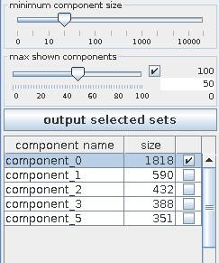
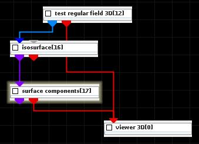
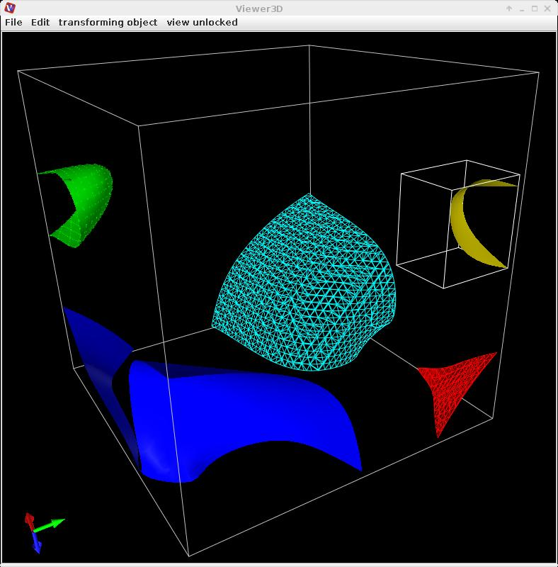

Surface components
The module breaks a triangulated surface into connected components of neighboring cells and outputs them as separate cell sets.
Input data
The input field is irregular 3-space with at least one cell set containing 2D cells.
Output data
The output field is irregular 3-space. There is a geometry object of all cell sets.
Computation parameters

The minimum component size slider declares the minimum of cells in a separate output cell set.
The max shown components defines the maximum number of shown cell sets. If there are more cell sets than declared by maximum, there are shown those sets with the most number of elements.
Information about separate cell sets appears in the component table. In order to generate an output field of components switch the appropriate check boxes on the right hand side in the table on and press output selected sets button. The geometry object of all cell sets is generated by default.
Presentation tab
Presentation tab contents are described in the common interfaces section unter the Presentation Panel entry.
Example

Choose test regular field 3D module from the test objects library and the isosurface and surface components modules from the 3D field mappers library and connect them.
In the isosurface UI choose threshold component trig_function and threshold value 0.98. In the surface components computation tab switch all components on and press the output selected sets button. In the presentation tab choose the appropriate component and change its presentation:
component_0 - without change
component_1 - switch lines on and choose background instead of smooth
component_2 - switch points on
component_3 - switch box on
component_4 - switch lines on
